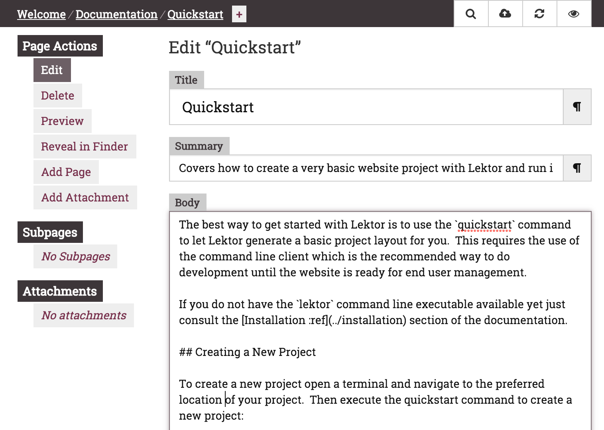

The best way to get started with Lektor is to use the quickstart command to
let Lektor generate a basic project layout for you. This requires the use of
the command line client which is the recommended way to do development until
the website is ready for end user management.
If you do not have the lektor command line executable :ref
available yet just consult the Installation :ref section of
the documentation.
To create a new project open a terminal and navigate to the preferred location of your project. Then execute the quickstart command to create a new project:
$ lektor quickstart
This will ask you a few questions and then create a new Lektor project with some basic configuration for you.
If you want a video walkthrough you can have a look at the screencast which explains the quickstart project a bit:
Now that you have a project you can run it. As a developer the easiest way to
do that is to use the server which runs the project on your local machine
as if it was a dynamic website.
All you have to do is to enter your project directory and run it:
$ cd yourproject
$ lektor server
This will automatically start the server and you can navigate to localhost:5000 to open the project.
You can keep the server running, it will automatically rebuild your files as they change.
While the development server is running you can use the built-in admin
interface. It can be accessed by clicking on the pencil symbol on a page
or by manually navigating to /admin/.

When you want to build the website for distribution you can make Lektor build
everything into static files. In fact, that's already happening in the
background while the development server is running. If you want to trigger
a build you can use the build command. By default it builds into a lektor
cache directory.
$ lektor build
You can also explicitly provide a path if you are not satisfied with the
default directory. To see where this directory is you can use the
project-info command:
$ lektor project-info --output-path
/Users/john/.../build-cache/6fdaeecab78d6aa99f86f586ab15da06
All your generated files will end up in that folder for easy publishing.
Now that you have done that, you might be interested in diving deeper into Lektor. These might be good next steps:
This website is built on Lektor as well. You can find the sources of it on GitHub :ext and you can click at any point on the source symbol () on the bottom to see the source for the current page.
Comments